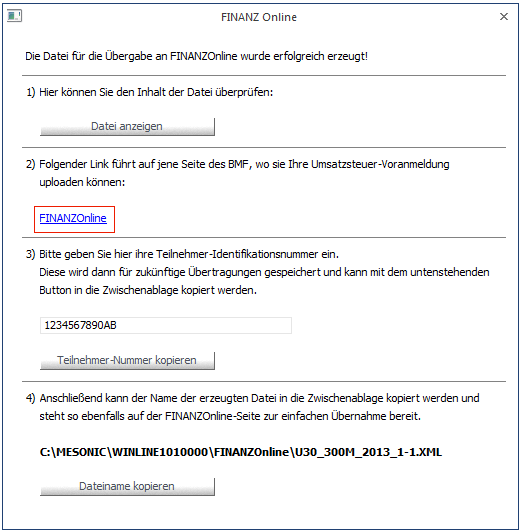
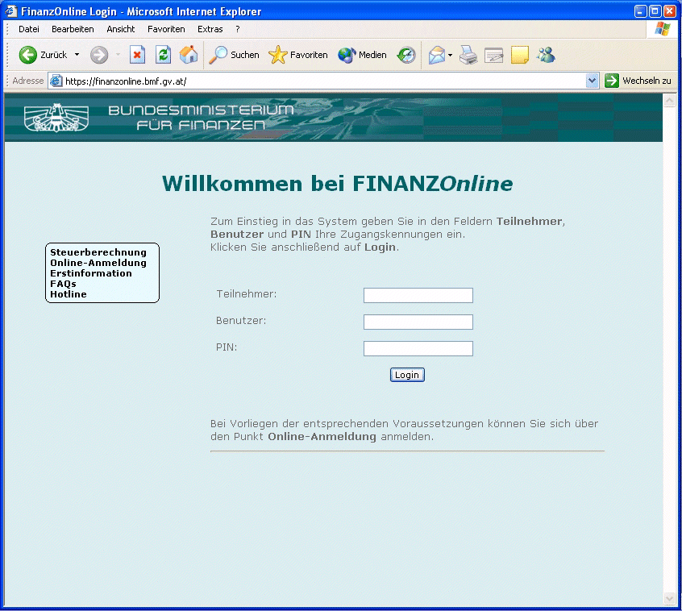
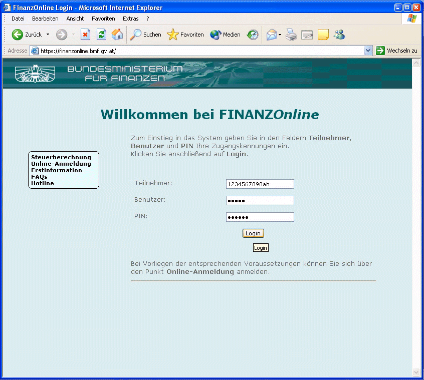
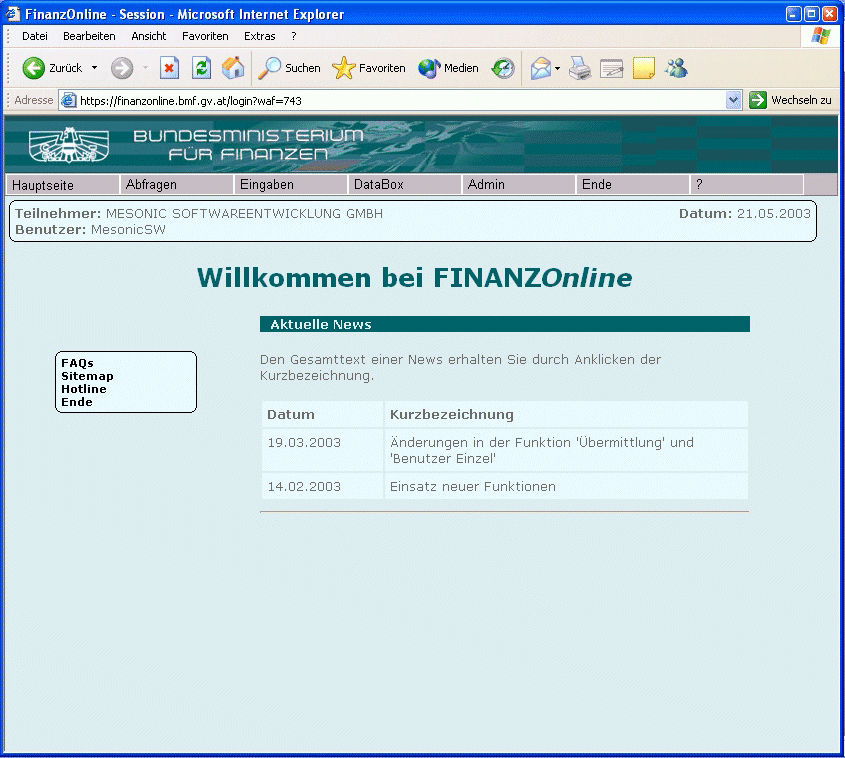
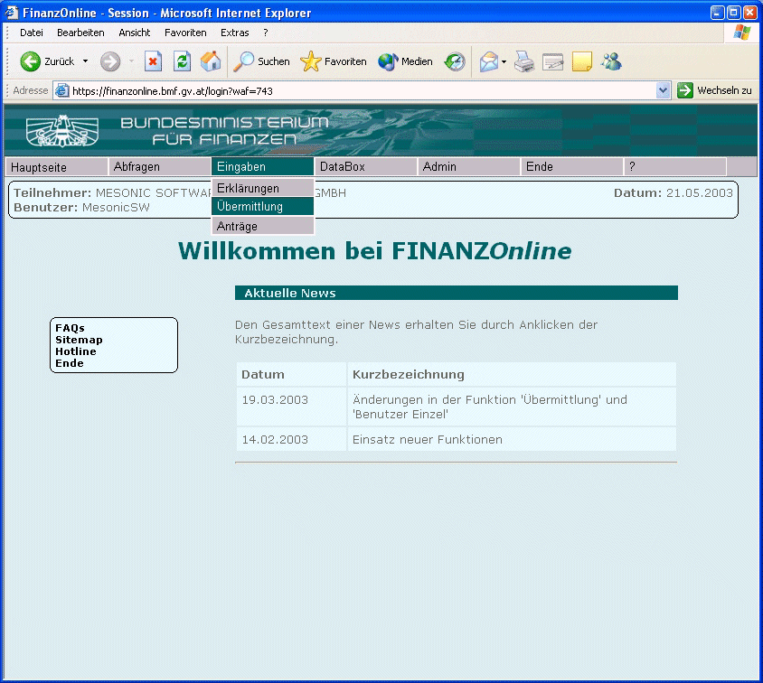
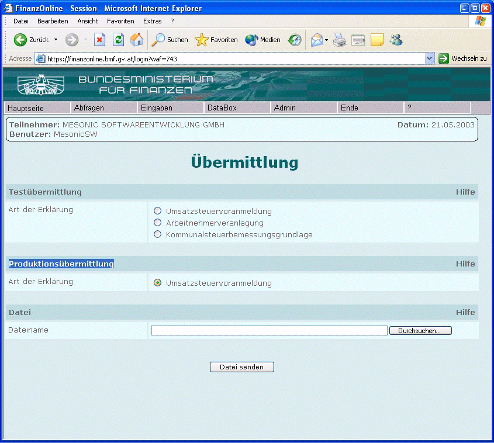
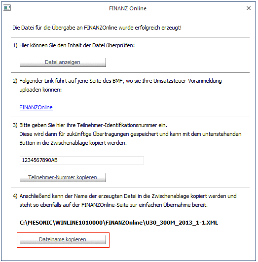
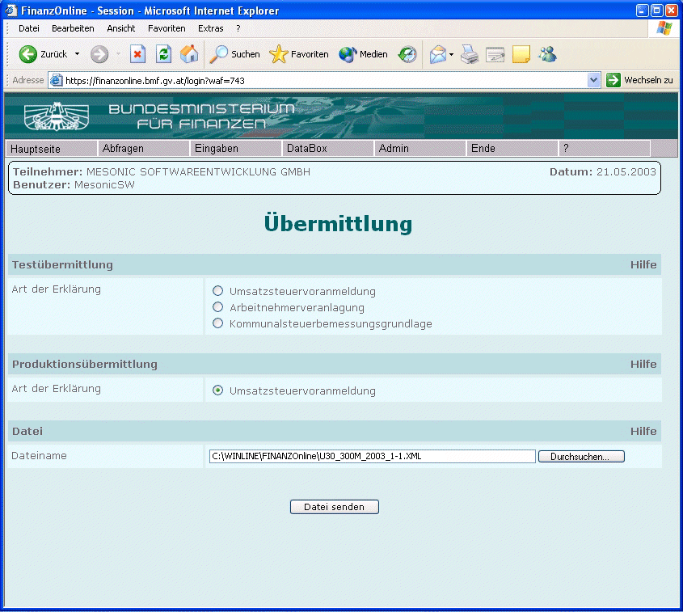
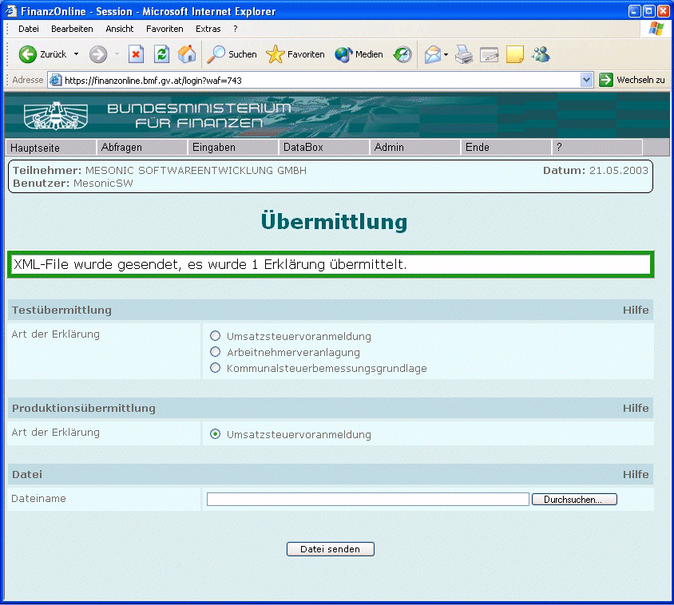

Basisinformationen
Am 26. Februar 2003 wurde im Nationalrat die Änderung des § 21 Abs. 1 des Umsatzsteuergesetzes 1994 beschlossen, wonach die Übermittlung der Voranmeldungen elektronisch zu erfolgen hat, ausgenommen diese ist dem Unternehmer mangels technischer Voraussetzungen nicht zumutbar.
Dazu wurde eine Verordnung erlassen, die festlegt, dass
ü die Übermittlung der Voranmeldungen auf elektronischem Weg erstmals für Voranmeldungen für den Zeitraum April 2003 (abzugeben bis 15. Juni, bei vierteljährlichem Voranmeldungszeitraum 15. August) zu erfolgen hat und
ü die Übermittlung der Voranmeldungen über FINANZOnline zu erfolgen hat.
Die Verpflichtung zu Abgabe von Voranmeldungen besteht neben den Fällen, in denen der Vorjahresumsatz 100.000 € übersteigt, auch dann, wenn der Unternehmer zu Abgabe von Voranmeldungen verpflichtet wurde oder wenn sich für den Voranmeldungszeitraum ein Überschuss ergibt.
Das Vorliegen der technischen Voraussetzungen wird dann anzunehmen sein, wenn der Unternehmer über einen Internet-Anschluss verfügt. Bei Abgabe der Voranmeldungen über den Parteienvertreter wird es anzunehmen sein, wenn dieser über einen beruflichen Internet-Anschluss verfügt.
Durchführung
1.) Voraussetzung Allgemein
Damit die Daten mit
FINANZOnline übermittelt werden können, muss eine Anmeldung erfolgen. Diese ist
ggf. persönlich beim Finanzamt zu stellen, bis April 2004 gibt es aber zeitlich
befristete Vereinfachungsregeln, die es auch dem steuerlichen Vertreter
erlauben, eine Anmeldung durchzuführen. Dadurch erhalten Sie eine
Teilnehmer-Nummer, einen Benutzername und einen PIN (Passwort). Diese
Informationen sollten Sie sorgfältig aufbewahren, ohne diese kann keine
Übermittlung durchgeführt werden. Der Benutzer bzw. der PIN kann bzw. muss - im
Gegensatz zur Teilnehmer-Nummer - individuell geändert werden (beim ersten
Einstieg in die FINANZOnline muss der Benutzer bzw. der PIN geändert
werden).
2.) Voraussetzung WinLine
Zuerst muss gewährleistet sein,
dass die Zuordnung der Steuerzeilen zu den Formularen (17 und 18) richtig
durchgeführt wurde (Details entnehmen Sie dem Kapitel Unternehmensstamm -
Steuerzeilen).
3.) Erstellen der Datei
Über den Menüpunkt
1 Auswertung
1 Steuer-Meldungen
1 Umsatzsteuer-Voranmeldung
muss die Datei, die in weiterer Folge übermittelt werden soll, erstellt werden. Details dazu entnehmen Sie dem Kapitel USt-Voranmeldung.
4.) Übermittlung der Datei
Nach dem Erstellen der Datei
(nachdem die Meldung für die Sperre der UVA-Periode bestätigt wurde) wird das
Fenster "FINANZ Online" geöffnet, das auch als Assistent verwendet werden
kann.
Bevor der die Internetseite mit der FINANZOnline aufgerufen wird, sollte unter Punkte 2 die Teilnehmer-Nummer eingetragen werden. Wenn danach noch der Button "Teilnehmer-Nummer kopieren" angeklickt wird, wird die Teilnehmer-Nummer in der Zwischenablage gespeichert.
Jetzt kann der Link "FINANZOnline" angeklickt werden. Dadurch wird der Internet-Browser geöffnet, der die Seite https://finanzonline.bmf.gv.at/ aufgerufen. Damit stehen Sie auf der Willkommen-Seite der FINANZOnline.

Jetzt befinden Sie sich auf der Seite der FINANZOnline, wo der Willkommensschirm angezeigt wird.

Hier müssen die Anmeldeinformationen eingegeben werden. Die Teilnehmer-Nummer befindet sich im Zwischenspeicher und dann demnach durch Anwahl des Menüpunktes
1 Bearbeiten
1 Einfügen
Im Internet-Explorer in das Eingabefeld eingefügt werden.
Die Felder
Ø Benutzer
und
Ø PIN
müssen gemäß der Anmeldung bzw. der Änderung eingetragen werden. Diese Informationen dürfen nicht gespeichert werden und müssen daher jedes Mal neu eingegeben werden.

Danach kann der Login-Button angeklickt werden. Dadurch gelangen Sie auf die nächste Seite, wo die Teilnehmerinformationen angezeigt werden. Dazu gibt es auch eine Rubrik, in der die aktuellen News vom BMF zur Verfügung gestellt werden.

Um eine UVA-Meldung zu übermitteln, muss der Menüpunkt
1 Eingaben
1 Übermittlung
in der FINANZOnline angewählt werden.

Dadurch gelangen Sie auf die nächste Seite, wo Sie auswählen können, welche Art von Meldung übermittelt werden soll.

Es ist darauf zu achten, dass in der Rubrik "Produktionsübermittlung" die Option "Umsatzsteuervoranmeldung" gewählt wird. Wenn das nicht gemacht wird, dann übermitteln Sie eine Testmeldung.
Jetzt muss noch die Datei angegeben werden, die übermittelt werden soll. Dafür gibt es zwei Möglichkeiten:
Entweder wird der Durchsuchen-Button angeklickt - damit kann dann die Festplatte nach der erstellten Datei durchsucht werden.
Oder Sie wechseln in das Programm WinLine FIBU zurück. Dort kann dann der Button "Dateiname kopieren" angeklickt werden - dadurch werden der Name und das Verzeichnis der erstellten UVA-Datei in den Zwischenspeicher gestellt.

Wenn Sie dann wieder in die FINANZOnline zurückkehren, können Sie den Dateinamen durch Anwahl des Menüpunktes
1 Bearbeiten
1 Einfügen
in das Feld
Ø Dateiname
übernehmen.

Jetzt sind alle Eingaben durchgeführt und die Datei dann durch Anklicken des Buttons "Datei senden" übermittelt werden. Wenn bei dieser Aktion alles funktioniert hat, dann erhalten Sie eine dementsprechende Meldung im nächsten Fenster.

Damit ist die Übermittlung der UVA abgeschlossen.
Nach 12 bis 48 Stunden können Sie über den Menüpunkt DataBox das Protokoll der Übermittlung ansehen, wo ersichtlich ist, wann welche Datei übermittelt wurde, und ob alle Daten auch angenommen wurden.